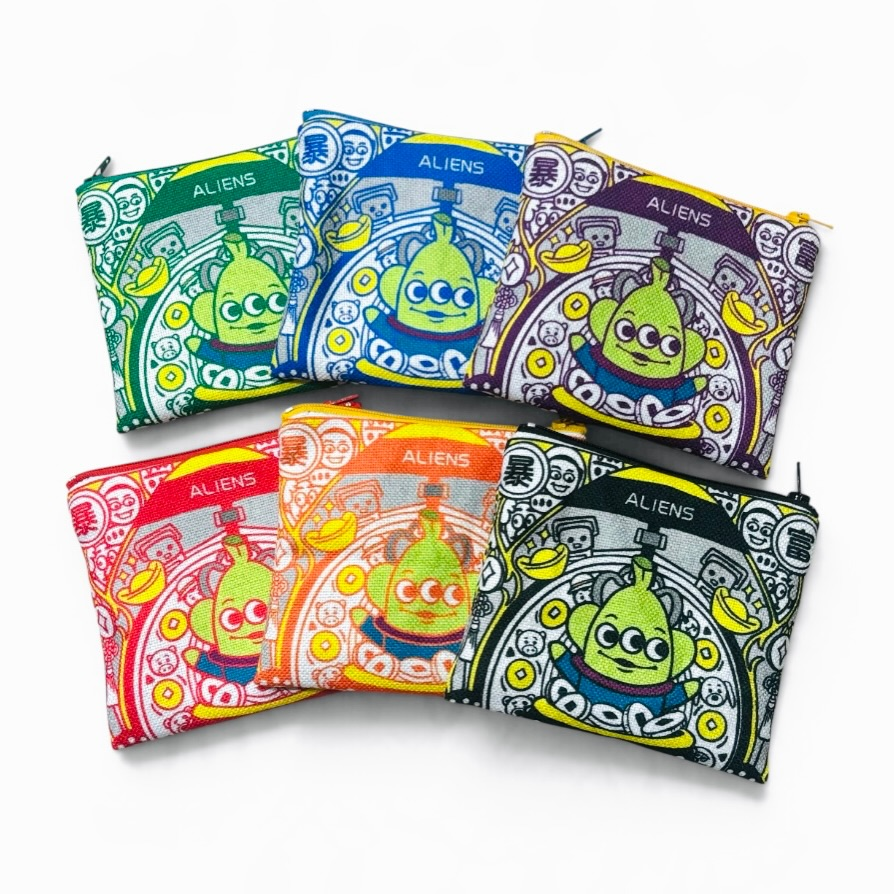
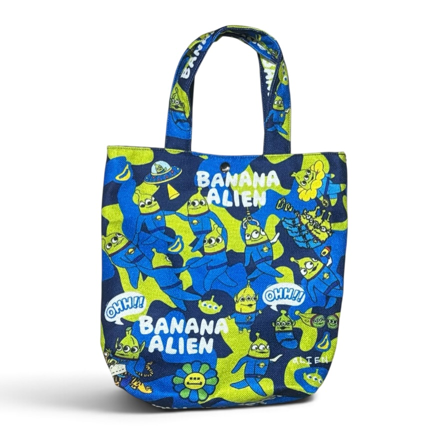
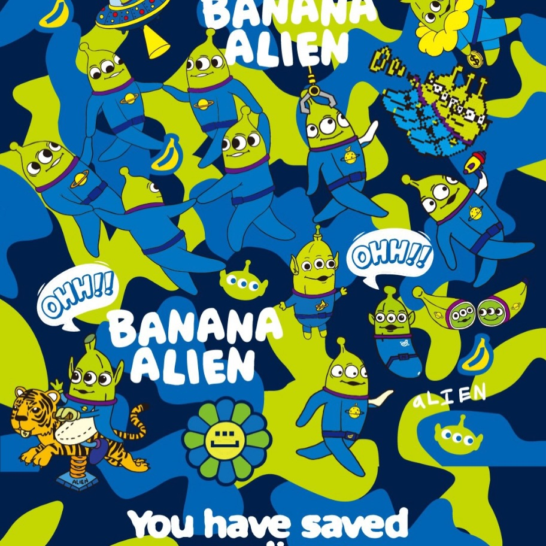
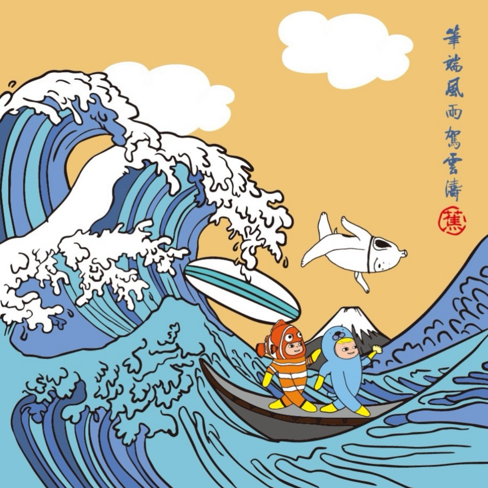
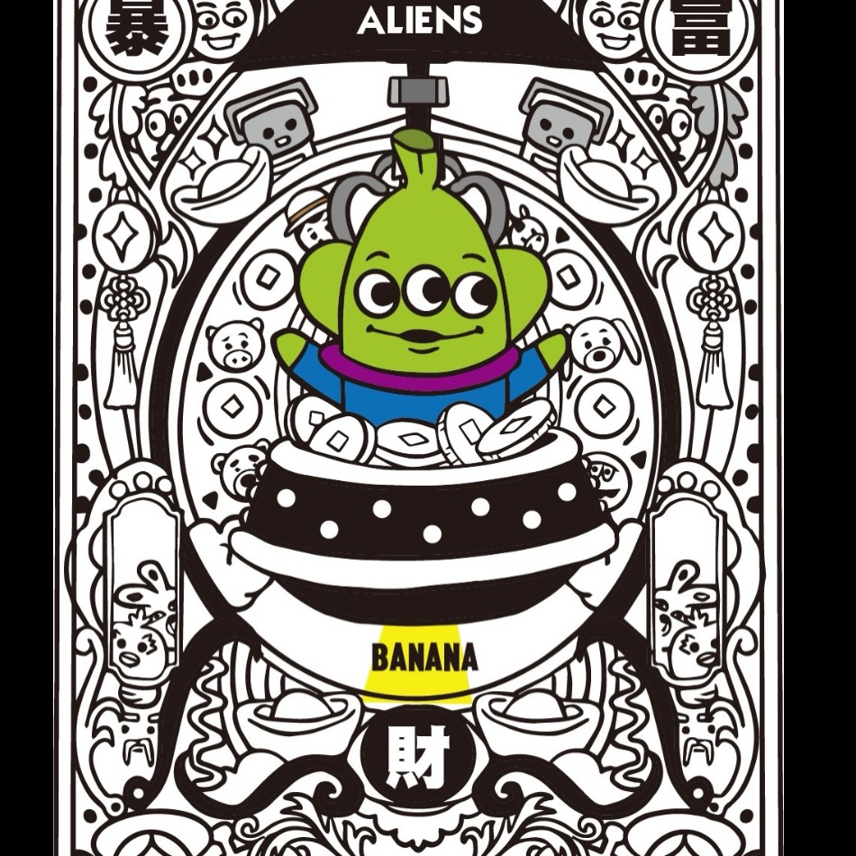

A Colourful Little Carry
Wallets in six colours and small shoulder bags in three. Everyday essentials with a brighter outlook.
Illustrated bags, accessories and artwork by TungB studio.
European pricing and availability are confirmed separately.

Wallets in six colours and small shoulder bags in three. Everyday essentials with a brighter outlook.

Two camouflage colourways, with a 25 × 27 size noted in the original post. Please confirm dimensions and availability when enquiring.

Look closely: the banana characters are hiding in the camouflage. A childhood sense of play, tucked into the details.

A banana makes an unexpected appearance in a reimagining of Hokusai’s famous wave.

A three-eyed banana sits in a gold-ingot-shaped vessel, surrounded by decorative motifs inspired by Mucha and symbols of good fortune.